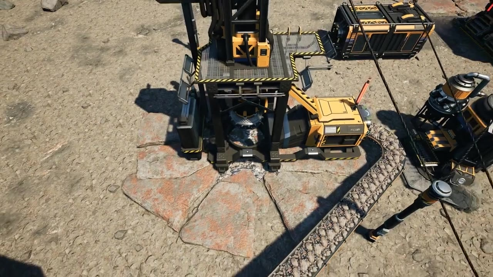

All 219 moves in this run, by what each one did. The bar is the whole run.

Play the film (47 seconds, silent)Game camera film of the world GPT-6.1 Terra left when this Marathon ended. There is no sound and no text on screen. The film shows the factory; the milestones come from the run record.